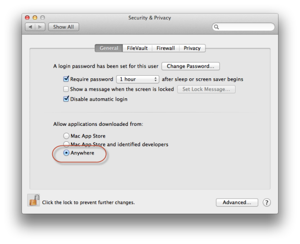

Проверите да ли је читач исправно инсталиран на систему тако што у терминалу покренете наредбу pcsctest. Наредба ће исписати информације о читачу укључујући и његов назив, а испис треба да „реагује“ када се картица убаци или извади из читача. Већина УСБ читача би требало да раде одмах по укључивању, али за неке може бити потребан PC/SC драјвер (ifhandler) са сајта произвођача.
Ако се приказао прозор са грешком као на слици, сигурно је да имате инсталирано јава радно окружење. Програм би требало да захтева инсталацију Oracle Java радног окружења ако оно није већ инсталирано, тако да вероватно управо и имате инсталирано Oracle Java окружење. Ако се програм уопште не покреће, погледајте решење за проблем #3.
Старији Mac OS X 10.6 и 10.7 иницијално долазе са Apple Java 1.6 окружењем, које би могло да се користи уместо Oracle Java окружења. Међутим, каснијим надоградњама Apple је потпуно уклонио верзију 1.6 тако да је мало вероватно да је још увек имате на систему! Уколико сте били вешти да натерате програм да користи Apple Java 1.6, за исправно повезивање Јаве са читачем на 64-битним системима неопходно је да у скрипт за покретање додате параметар -d32 (на пример у терминалу би програм покретали са java -d32 -jar /Applications/JFreesteel*.app/Contents/Java/eidviewer.jar).
Програм ће се приказивати на српском уколико је српски подешен као подразумевани језик на систему. Отворите подешавања система и потражите листу у групи
Програм захтева инсталацију Oracle Java окружења. Због величине датотеке (преко 100MB) Јава окружење није укључено у пакет апликације. Требало би да уколико на систему није већ инсталирана Јава (због покретања Јава аплета на пример) програм затражи инсталацију при првом покретању. У сваком случају покушајте да са сајта java.com преузмете и инсталирате Oracle Java окружење.
Да проверите верзију и издање Јаве, можете да потражите одељак Java у системским подешавањима или да ред по ред прекопирате следеће наредбе у терминал:
/Library/Internet\ Plug-Ins/JavaAppletPlugin.plugin/Contents/Home/bin/java -version /usr/libexec/java_home -v java -versionПрва наредба проверава да ли је инсталирано окружење Oracle Java JRE. Друга наредба приказује сва доступна окружења на систему. Последња наредба проверава да ли је инсталирана развојна верзија Oracle Java окружења, стара Apple Java или нека друга варијанта. Ова наредба може да тражи да инсталирате Oracle JDK. То значи да немате инсталирану развојну верзију, али нема потребе да је инсталирате јер она није неопходна за покретање програма. Довољно је преузети Јава инсталацију са сајта java.com.
Apple Gatekeeper може да онемогући покретање програма који нису аутентификовани кроз Developer ID програм. Уколико кликнете десним тастером и из менија одаберете покретање апликације требало би да се прикаже прозор у коме можете да потврдите изузетак и наставите коришћење програма.
Gatekeeper подешавања се налазе у групи „Security & Privacy“. Apple Gatekeeper је користан и немојте га олако искључивати. Али уколико имате проблем са покретањем ове апликације, покушајте да привремено искључите, покушате да тада покренете програм и затим вратите подешавања на претходну вредност.
Уколико поседујете Apple Developer ID сертификат, и желите да помогнете и њиме потпишете издања програма JFreesteel eID Viewer, погледајте инструкције у Гит складишту и јавите се е-поштом.
Датум објављивања: 15. фебруар 2015. године
MD5 отисак: 428a036b4bdeb31a6f81a7cc37a33c7a
Изворни код: tag:eidviewer-1.1